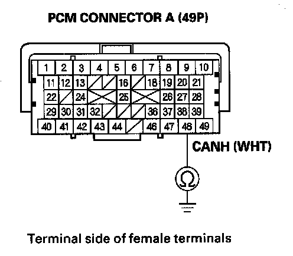
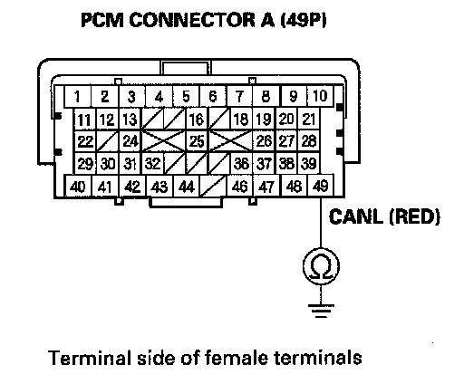

F-CAN Circuit Troubleshooting - Part 2
F-CAN Circuit Troubleshooting (Part 2)1. Disconnect the gauge control module connector A (12P).
2. Disconnect the VSA modulator-control unit 25P connector.
3. Disconnect SRS unit connector A (28P).
4. Disconnect TPMS control unit connector A (20P).
5. Disconnect the yaw rate-lateral/longitudinal acceleration sensor 4P connector.
6. Disconnect the steering angle sensor 5P connector.
7. Disconnect the SH-AWD control unit connector A (20P).
8. With active damper system: Disconnect the active damper control unit 14P connector.
9. With AcuraLink: Disconnect the AcuraLink control unit (XM receiver) connector A (20P)

10. Check for continuity between PCM connector terminal A48 and body ground.
Is there continuity?
YES - Repair short in the wire between PCM connector terminal A48 and the gauge control module, the VSA modulator-control unit, the SRS unit, the TPMS control unit, the yaw rate-lateral/longitudinal acceleration sensor, the steering angle sensor, the SH-AWD control unit, the active damper control unit (with active damper system), the AcuraLink control unit (XM receiver (with AcuraLink)) or the DLC.
NO - Go to step 11.

11. Check for continuity between PCM connector terminal A49 and body ground.
Is there continuity?
YES - Repair short in the wire between PCM connector terminal A49 and the gauge control module, the VSA modulator-control unit, the SRS unit, the TPMS control unit, the yaw rate-lateral/longitudinal acceleration sensor, the steering angle sensor, the SH-AWD control unit, the active damper control unit (with active damper system), the AcuraLink control unit (XM receiver (with AcuraLink)) or the DLC.
NO - Go to step 12.
12. Reconnect all connectors.
13. Connect the HDS to the DLC.
14. Disconnect gauge control module connector A (12P).
15. Turn the ignition switch ON (II), and read the HDS.
Does the HDS identify the vehicle?
YES - Replace the gauge control module.
NO - Go to step 16.
16. Turn the ignition switch OFF.
17. Reconnect gauge control module connector A (12P).
18. Disconnect the VSA modulator-control unit46P connector.
19. Turn the ignition switch ON (II), and read the HDS.
Does the HDS identify the vehicle?
YES - Replace the VSA modulator-control unit.
NO - Go to step 20.
20. Turn the ignition switch OFF.
21. Reconnect the VSA modulator-control unit 46P connector.
22. Disconnect SRS unit connector A (28P).
23. Turn the ignition switch ON (II), and read the HDS.
Does the HDS identify the vehicle?
YES - Replace the SRS unit.
NO - Go to step 24.
24. Turn the ignition switch OFF.
25. Reconnect the SRS unit connector A (28P).
26. Disconnect the TPMS control unit connector A (20P).
27. Turn the ignition switch ON (II), and read the HDS.
Does the HDS Identify the vehicle?
YES - Replace TPMS control unit.
NO - Go to step 28.
28. Turn the ignition switch OFF.
29. Reconnect the TPMS control unit connector A (28P).
30. Disconnect the yaw rate-lateral/longitudinal acceleration sensor 4P connector.
31. Turn the ignition switch ON (II), and read the HDS.
Does the HDS identify the vehicle?
YES - Replace the yaw rate-lateral/longitudinal acceleration sensor.
NO - Go to step 32.
32. Turn the ignition switch OFF.
33. Reconnect the yaw rate-lateral/longitudinal acceleration sensor 4P connector.
34. Disconnect the steering angle sensor 5P connector.
35. Turn the ignition switch ON (II), and read the HDS.
Does the HDS identify the vehicle?
YES - Replace the steering angle sensor.
NO - Go to step 36.
36. Turn the ignition switch OFF.
37. Reconnect the steering angle sensor 5P connector.
38. Disconnect the SH-AWD control unit connector A (20P)
39. Turn the ignition switch ON (II), and read the HDS.
Does the HDS identify the vehicle?
YES - Replace the SH-AWD control unit.
NO - Go to step 40.
40. Turn the ignition switch OFF.
41. Reconnect the SH-AWD control unit 20P connector.
42. Disconnect the active damper control unit14P connector.
43. Turn the ignition switch ON (II), and read the HDS.
Does the HDS identify the vehicle?
YES - Replace the active damper control unit.
NO - Go to step 44.
44. Turn the ignition switch OFF.
45. Reconnect the active damper control unit.
46. Disconnect AcuraLink control unit (XM receiver) connector A (20P).
47. Turn the ignition switch ON (II), and read the HDS.
Does the HDS identify the vehicle?
YES - Replace the AcuraLink control unit (XM receiver).
NO - Update the PCM if it does not have the latest software, or substitute a known-good PCM, then recheck. If the symptom/indication goes away with a known-good PCM, replace the original PCM.